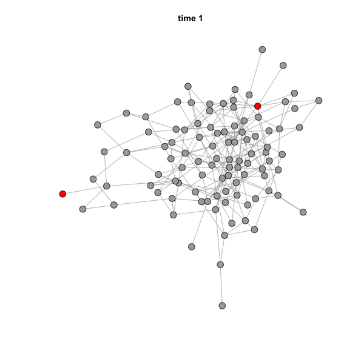

8. Intro to Diffusion on Networks
Dai Shizuka
updated 01/12/23
Packages you will need for this tutorial:
library(igraph)One of the assumptions of network theory is that the connections between elements in a system matter to the function/property of the system and/or the individual elements within the system. One way in which such connections matters is that they can facilitate the flow of something through this system. Some examples include:
- Electricity through an electric grid
- Bits of information through the internet
- Vehicles/individuals moving through a transportation network
- Information through social networks
- Disease through contact networks
- Modification of social strategies through competition networks
One of the classical theories on social spread is that the accumulation of individuals (nodes) that take on a new state (e.g., an innovation) takes on different pattern when the spread is due to asocial processes (e.g., everyone innovates on their own) versus social processes (e.g., innovation spreads through social transmission).

Figure showing classical predictions of asocial versus social spread of innovations. From Franz & Nunn (2009).
Here, let’s explore this paradigm by actually simulating the spread of innovation due to asocial or social processes.
8.1 Simulation of asocial changes in state (e.g., asocial learning)
Let’s first consider a situation where each individual in a social network has an inherent probability to adopt the innovation at any given time.
First, we will make a random graph consisting of 100 nodes. We will set the initial ‘innovation adoption’ status for all individuals (all initially 0).
set.seed(4)
n=100
g=erdos.renyi.game(n, p=0.05)
V(g)$status=0 #the 'innovation adoption status' for each individual. All initially 0.Let’s plot this random graph. While we’re at it, we will save the layout so that we can use it for all the plots of this network later.
l=layout_with_fr(g)
plot(g, vertex.label="", vertex.size=8, vertex.color="darkgray", layout=l)
Now, we will set the ‘asocial learning’ parameter, \(x\) to be 0.1. This is the probability that any given individual will come up with the innovation–e.g., how to forage for a new prey item.
x=0.01Let’s run one practice run of how this will work. In one time step, we flip a coin for each individual whether or not they will adopt the innovation. Based on the coin flip, we will convert the status of the individual to 1 if they learned the innovation in that time step:
naive=which(V(g)$status==0) #which individuals have not adopted yet?
adopt=sample(c(1,0), length(naive), prob=c(x, 1-x), replace=T) #based on the probabilities, flip a coin for each naive individual and determine if the individual adopts the innovation in the current time step
V(g)$status[naive][which(adopt==1)]=1 #change status of individuals whose status is 0 and is in the list of new adopters
plot(g, vertex.label="", vertex.color=c("darkgray", "red")[V(g)$status+1], vertex.size=8, layout=l)
Now, we will repeat this simulation for 30 time steps. Here, we need to consider that any given individual can only adopt an innovation once (it can’t go back). If you’re thinking about this in terms of disease, it’s like an ‘SI model’ in which individuals do not recover or go back to a susceptible state. In practical terms, this means that we will just ignore coin flips for individuals whose status = 1.
t=300
g.time=list()
V(g)$status=0
for(j in 1:t){
naive=which(V(g)$status==0)
adopt=sample(c(1,0), length(naive), prob=c(x, 1-x), replace=T)
V(g)$status[naive][which(adopt==1)]=1
g.time[[j]]=g
}What we end up with is 20 igraph objects in a list called
g.time (output not shown)
g.timeIn these graphs, the only thing that changes across these 20 times steps is the individual status. In each time step, there will be more individuals that adopt the innovation. We can plot how many cumulative individuals adopt the new innovation (i.e., become status=1) across time steps:
n.adopt.asocial=sapply(g.time, function(x) length(which(V(x)$status==1))) #for each time step, count the number of individuals that have adopted the innovation
plot(n.adopt.asocial, type="b", las=1, ylab="Cumulative number of nodes adopted", xlab="Time", ylim=c(0,100))
You should see that, in the asocial learning case, there is a decelerating accumulation curve of individuals that adopt the innovation. This is because all individual have the same probability of adopting the new status at any given point, but they never go back–so there are fewer individuals left that hasn’t adopted the innovation as time goes on. Thus, there is a steady decelerating rate of adoption of the innovation.
For visualization purposes, let’s plot the network across the first 20 time points.
def.par <- par(no.readonly = TRUE)
layout(matrix(1:20, byrow=T, nrow=5))
par(mar=c(1,1,1,1))
for(i in 1:20){
v.col=c("darkgray", "red")[V(g.time[[i]])$status+1]
plot(g.time[[i]], vertex.label="", vertex.color=v.col, layout=l, main=paste("Time",i))
}
8.2 Simulation the social transmission of whatever state in a random graph
Now, let’s take the same network and try the case where a new innovation spreads socially. That is, an innovation is socially transmitted.
First, we’ll start over by creating a graph object, but we’ll use the
same set.seed() function so we can re-create the
connectivity of the asocial case.
set.seed(4)
n=100
g2=erdos.renyi.game(n, p=0.05)Next, we will create the “status” vertex attribute. Everyone will start with state = 0. Then, we will randomly pick 2 nodes who will have state = 1
V(g2)$status=0 # Create a vertex attribute for adoption status. 1 if the node has adopted the innovation. 0 if not.
seed=sample(V(g2),2) #select 2 innovators
V(g2)$status[seed]=1 #These 'seed' individuals get a status of 1 at the beginning.
plot(g2, vertex.label="", vertex.size=8, vertex.color=c("darkgray", "red")[V(g2)$status+1], layout=l)
Now, we will set a “social transmission” parameter, \(s\). You can think of this as the linear increase in the probability that an individual will take on a new “state” (e.g., learn a new foraging strategy or get infected by a disease) when it has a ‘neighbor’ that has that state. Since it’s a probabilty 0 ≤ \(s\) ≤ 1.
Let’s set \(\tau = 0.1\) for now:
tau = 0.1Now we will simulate 30 time steps of the spread of this innovation. We will save the network for each time point. The for-loop routine will be as follows:
- first, we will use the
neighbors()function to identify the neighbors (i.e., nodes connected to) of each node. We will use this to add up the status of each node’s neighbors. - Next, we will implement a social learning process in which the probability \(p\) that an individual that has not yet adopted the innovation will adopt in that time step = \(1-e^{-\tau*s}\), where \(\tau\) is the parameter that describes the influence of social learning, and \(s\) is the number of neighbors of an individual that has already adopted the innovation.
- Based on the calculated probability \(p\) for each individual, we then use the
sample()function to “flip a biased coin” to see if the focal individual adopts the innovation or not.We do this for every individual that has not yet adopted the innovation (i.e., status = 0). Note that if the focal individual has already adopted the innovation, then we just ignore that individual and move on. - We then change the status of each individual that got a “1” in the coin flip to status=1
- Return to step 1.
t=300 #time steps to run the simulation
g2.time=list() #empty list to store the output networks
for(j in 1:t){
nei.adopt=sapply(V(g2), function(x) sum(V(g2)$status[neighbors(g,x)]))
p=(1-exp(-tau*nei.adopt))*abs(V(g2)$status-1) #here, we multiply the probabilities by 0 if node is already adopted, and 1 if not yet adopted
adopters=sapply(p, function(x) sample(c(1,0), 1, prob=c(x, 1-x)))
V(g2)$status[which(adopters==1)]=1
g2.time[[j]]=g2
}After this simulation has run, we will plot the accumulation curve for the number of individuals that adopted the innovation through social learning.
n.adopt.social=sapply(g2.time, function(x) length(which(V(x)$status==1))) #for each time step, count the number of adopters.
plot(n.adopt.social, type="b", las=1, ylab="Cumulative number of nodes adopted", xlab="Time", ylim=c(0,100))
Ok, this accumulation curve looks different than the asocial case, right? This is a clear “S-shaped” curve characteristic of social learning. Let’s plot both the asocial and social case together:
plot(n.adopt.social, type="l", lty=1, col="black",las=1, ylab="Cumulative number of nodes adopted", xlab="Time", ylim=c(0,100))
points(n.adopt.asocial, type="l", las=1, lty=2, col="red")
legend("topleft", lty=c(1,2), col=c("black", "red"), legend=c("asocial", "social"))
This looks an awful lot like the theoretical expectation:
Figure showing classical predictions of asocial versus social spread of innovations. From Franz & Nunn (2009).
8.3 Animating social transmission using GIFs
Now, we will use the results of the simulations in section 11.2 and animate the dynamics of social diffusion on a network.
Let’s first try to plot what the network should look like for the first 12 time points.
layout(matrix(1:10, byrow=T, nrow=2))
par(mar=c(1,1,1,1))
for(i in 1:10){
v.col=c("darkgray", "red")[V(g2.time[[i]])$status+1]
plot(g2.time[[i]], vertex.label="", vertex.color=v.col, layout=l, main=paste("Time",i))
}
par(def.par)What we are looking for here is to make sure that the network is laid out identically in each panel, and only the node colors change as more individual change status through social transmission.
Ok, now we are ready to make a GIF that animates the change in the
social network across time. To do this, we will use the function
saveGIF() in the package animation. How this
function works is that you will run a for loop inside the function to
generate a batch of images that you want to stitch together as an
animation. Here is the code:
library(animation)
saveGIF(
{for (i in 1:30) {
plot(g2.time[[i]], layout=l, vertex.label="", vertex.size=5, vertex.color=c("darkgray", "red")[V(g2.time[[i]])$status+1], main=paste("time",i,sep=" "))
}
}, movie.name="sample_diffusion.gif", interval=0.2, nmax=30, ani.width=600, ani.height=600)When you run this code, the GIF file should actually pop up on your screen. You can simply drag it to a web browser to see the animation. It should look like this:

The speed of the animation can be set using the argument
interval=. Other arguments can be found by going to
?ani.options.
NBDA
library(NBDA)
V(g2)$name=paste("indiv",1:vcount(g2),sep="")
adj.mat=as_adj(g2, sparse=F)
adj.array=array(dim=c(nrow(adj.mat), ncol(adj.mat), 1))
adj.array[,,1]=adj.mat
#get list of individuals that solved at each time
solve.mat=sapply(g2.time, function(x){
V(x)$status
})
#time of acquisition
ta=apply(solve.mat, 1, function(x) which.max(x==1))
#order of acquisition
oa=rank(ta, ties.method="random")
diffdat=nbdaData("try1", assMatrix=adj.array, orderAcq=oa, timeAcq=ta)
# oa.fit_social=oadaFit(diffdat, type="social")
# oa.fit_social@outputPar
# oa.fit_social@aic
# data.frame(Variable=oa.fit_social@varNames,MLE=oa.fit_social@outputPar,SE=oa.fit_social@se)
ta.fit_social=tadaFit(diffdat, type="social")
ta.fit_social@outputPar## [1] 85.30706 102.33393data.frame(Variable=ta.fit_social@varNames,MLE=round(ta.fit_social@outputPar,3),SE=round(ta.fit_social@se,3))## Variable MLE SE
## 1 Scale (1/rate): 85.307 20.107
## 2 1 Social transmission 1 102.334 26.775adj.mat=as_adj(g, sparse=F)
adj.array=array(dim=c(nrow(adj.mat), ncol(adj.mat), 1))
adj.array[,,1]=adj.mat
#get list of individuals that solved at each time
solve.mat=sapply(g.time, function(x){
V(x)$status
})
#time of acquisition
ta=apply(solve.mat, 1, function(x) which.max(x==1))
#order of acquisition
oa=rank(ta, ties.method="random")
diffdat=nbdaData("try1", assMatrix=adj.array, orderAcq=oa, timeAcq=ta)
oa.fit_social=oadaFit(diffdat, type="social")
oa.fit_social@outputPar## [1] 0.05585274# oa.fit_social@aic
# data.frame(Variable=oa.fit_social@varNames,MLE=oa.fit_social@outputPar,SE=oa.fit_social@se)
ta.fit_social2=tadaFit(diffdat, type="social")
ta.fit_social2@outputPar## [1] 377.53416 18.94298data.frame(Variable=ta.fit_social2@varNames,MLE=ta.fit_social2@outputPar,SE=ta.fit_social2@se)## Variable MLE SE
## 1 Scale (1/rate): 377.53416 88.932528
## 2 1 Social transmission 1 18.94298 5.067411##Next: 9. Random Graphs